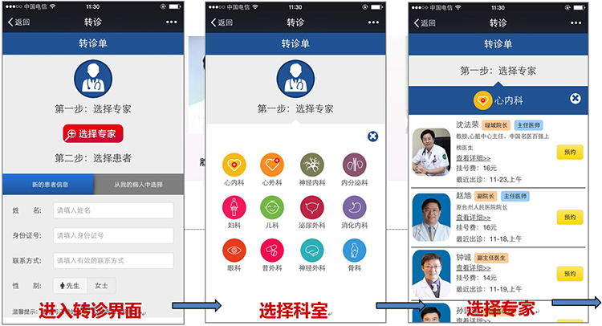
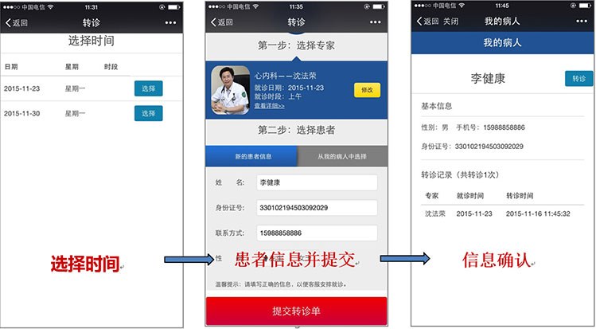
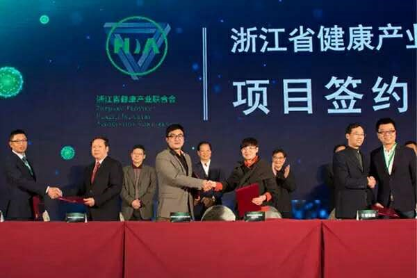
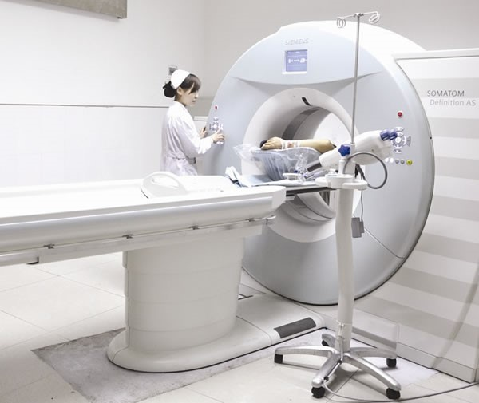
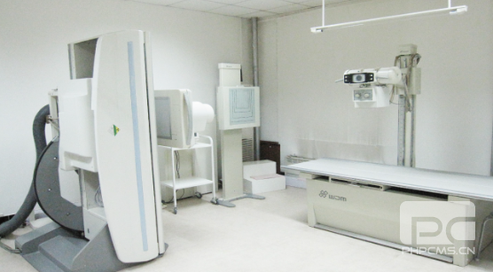
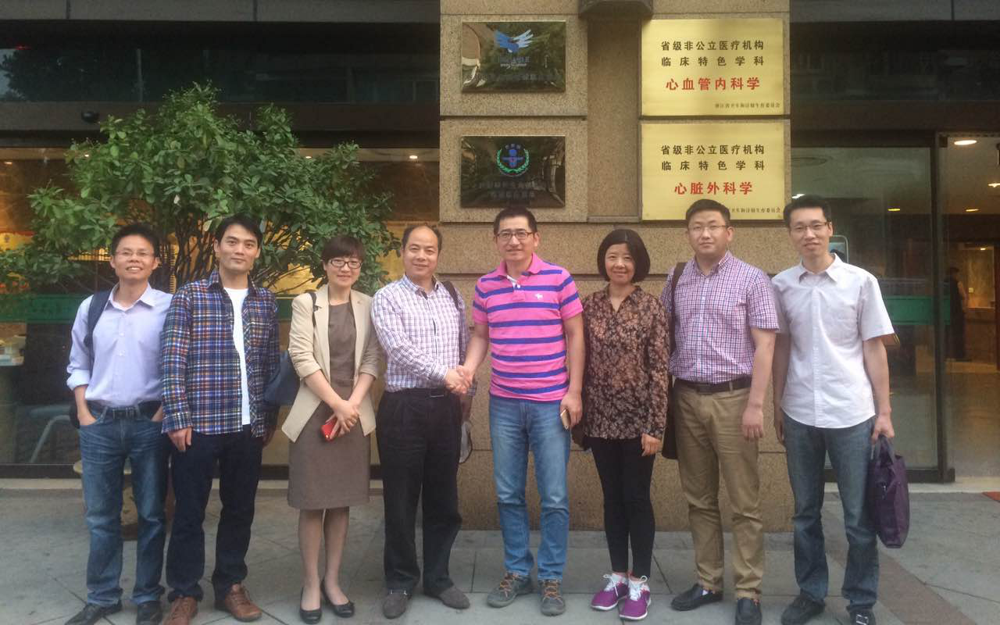
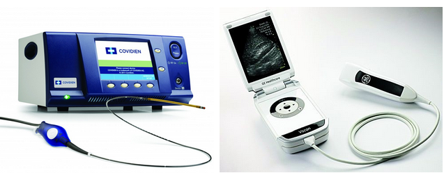

“杏香医生”是杭州杏香园健康管理有限公司 旗下的子品牌，专注于基层医疗生态的建设。通过专 家集团的就医通道、远程服务，提升基层医疗机构的 医疗服务水平，打造分级诊疗中的“基层医疗自生态 ”。
公司CEO刘旭晖作为大学生创业代表曾受到李 克强总理的接见，并得到肯定。
自分级诊疗推行以来，社区逐渐成为了市民首 诊的选择。伴随而来的是，由于条件所限，一些社区 无法诊疗的疾病以及需要住院的患者会逐渐增多。如 何将这部分患者合理转诊到更适合的医院，就成了最 现实的问题。
杏香医生的第一款产品“杏香社区”平台应运 而生，让患者转诊多了一条重要途径。
患者通过“杏香社区”精准匹配专家，并转诊 到杏香医生集团落地医院，由医生集团安排“对症” 的专家到离患者最近、设备好、不排队的医院，完成 对病人的诊治。
杏香社区是一款微信服务号产品，操作简单快捷，找到对症专家，实现一键转诊。
杏香医生集团由浙一医院、浙二医院、邵逸夫 医院、省人民医院、省中医院等省内大型三甲医院 100多位专家、数十个团队组成，涵盖了几乎所有科 室。拥有任何一家医院都无可比拟的专家团队。
杏香社区是一款微信服务号产品，操作简单快捷，找到对症专家，实现一键转诊。
 杭州怡年健康管理有限责任公司（简称怡年健康）依托杏香园医生众创平台，致力于高端人群和特需人群的健康管理。通过专业的健商测试、体质监测、精准医疗等手段，树立他们的健康管理意识
依托杏香园丰富的多学科专家集团资源，拥有国内著名心血管专家沈法荣教授领衔的专家团队、原浙江省干部保健局局长陆昭怀领衔的保健团队和一支优秀的健康管理服务团队。 拥有浙江省省级干部保健基地（浙江绿城心血管病医院）合作平台以及位于杭州黄龙洞景区、自然环境和人文环境一流的运营场所。除杭州外，已在江苏南京、安徽合肥等地设立了子公司。
怡年健康管理引进和吸收国际领先的健康管理理念，创新设计出独特、科学的健康管理体系，坚持保密、规范、系统和个性的原则，倡导以客户为核心、预防为主、科学管理的理念，提供个性化健康评估、个性化定制的健康管理方案、个性化健康管理服务、高品质的就医保障服务，全程线上线下呵护您与家人的健康，提升您与家人的健康管理素养，提高生活品质。
杭州杏香园影像项目植根于杏香园医生众创平台，依托顶级影像医生集团，致力于为广大病患提供权威、便捷、一站式放射影像阅片和诊断服务，解决基层医疗机构放射影像医生资源缺乏问题。
杏香园影像中心通过杏香园全球影像“云医疗”系统，搭建远程移动诊疗系统平台，由顶级影像医生集团专家即时为病人阅片诊断和会诊，集中为广大基层医疗机构提供放射、影像阅片并出具权威报告。
——面向浙江区域内2000多家乡镇卫生院及社区卫生服务中心，通过与当地卫计局合作，依托全球影像“云医疗”系统，向缺乏影像医生的基层医疗机构提供远程阅片和诊断服务。
——向杭州及周边具有一定规模的民营医院提供放射影像服务，提供疑难病例的专家会诊服务。
——同杭州市区范围内的知名体检中心合作，为体检中心阅片出具报告，为疑似病患提供建议，导医服务。
 形成区域影像中心：实现异地医疗机构、医生之间、医患之间的可视对话交流。使医生在千里之外可对患者进行诊视、查阅既往病史资料、分析化验及病理结果，进行X线片、CT片、MR及其他影像资料的分析诊疗。
专家在线远程诊疗：针对疑难病例，可通过杏香园影像中心全球影像“云医疗”系统平台获取医生专家集团在线远程诊疗和会诊。
区域远程会诊系统中心：实现医学信息资源共享，实现多点互动的医患会诊模式，把医院治病救人的医疗方式外延到社区和家庭，同时把医院治病救人的医疗内涵深入到医生办公室，甚至医生家里，为传统的医疗和保健带来新活力。
放射影像二维码胶片和纸质胶片服务： 扫描二维码可全面掌握患者远近期放射影像信息，为医生诊断提供参考，为患者留下一份永不丢失的电子档案。
杏香园消化内科医生集团是由数十位浙江省内顶级消化内科专家组成，旨在打造国内最高标准的消化内科“医疗＋互联网”名医诊疗平台。依托专业技术优势为国内消化内科疾病患者提供便捷、安全、舒适、专业的诊疗服务，并为疑难病症患者提供第三方诊疗意见。患者可以不用挤破头去各家医院找专家，能在消化内科医生集团落地医院一站式找到消化内科领域顶级专家坐诊信息，与专家面对面并由专家亲自操作胃肠镜检查治疗。
国内顶尖的消化内科专家（所有专家全部来自省级三甲医院）
全球领先的设备（全球领先、国内顶尖的高科技利器）
一站式陪同服务（尊享贵宾级待遇和体验）
一流的就医环境（浙江绿城心血管病医院VIP中心）
不再为找不到顶级专家烦恼！
——我们有擅长各种消化内科疾病诊疗的专家。
不再为选错专家而烦恼！
——我们为您匹配最适合的专家
不再为挂不到专家号而烦恼！
——我们有资深专家助理全程为您安排预约就诊。
不再担心复查找不到专家！
——我们有专业助理为您提供全天候的随访。
——我们可诊断并治疗各种消化内科疾病（包括但不限）：胃肠道疾病；肝脏疾病；胰胆疾病；食管疾病；腹膜及肠系膜疾病；内镜检查、治疗等。
——我们让您感觉到舒适、愉悦的就诊体验：专职护士陪同挂号，收费；就诊后快递报告单；为有需要住院治疗的患者优先安排床位；建立个人健康档案；私人护理专家定期电话回访。
——我们给您个性、私密化的就诊环境：独立诊室；专家一对一精准诊疗；温馨优雅的候诊区；免费饮品贴心送上；便利停车服务只为您。
杏香园消化内科医生集团落地医院配备全球同类型最新、最先进的设备——奥林巴斯HEVIS LUCERA ELITE系统和HQ型电子内镜CV－290. 其智能弯曲功能、强力传导功能、可变硬度功能三项新技术极大地减轻了患者的痛苦，更是早期胃癌筛查的最主要手段。
门诊时间: 每周5日专家门诊
门诊地点: 消化内科医生集团（浙江绿城心血管病医院）临床基地
预约电话: 0571-85291076
网络预约：转杏香医生链接
杏香母婴依托杏香园强大的母婴专家集团优势及专业技术优势，借助“互联网+医疗”平台，为母婴人群私人定制线上线下结合的医护健康咨询、保健信息记录、就医服务、孕育知识、优秀月嫂等“一站式”个性化专业服务。
利用APP孕育养护平台+实体平台。搭建APP孕育养护互联网平台，完善用户和医护，用户和医院，用户和商家，医护和医院，医护和医护之间的有效链接。激活母婴保健专家效能，全面推荐产业链接。
与各级妇幼保健机构和基层妇幼保健医护人员合作，全面提升和扩展妇幼保健机构的保健水平和服务 能力，让所有的孕育家庭享受有质量、高品质、便捷的母婴健康服务和健康产品。
100%孕育家庭希望能获得足够良好的服务和医疗。
100%孕妈妈希望自己的分娩历程是一个美好的回忆，安全，温馨，舒适，能得到高品质的服务。
100%的父母声明，孩子是生命的延续，是将来的希望，他们最关心孩子。
100%的准妈妈、准爸爸希望得到全面的孕育知识，而缺乏相关知识的占87% 。
100%的孕育夫妇对孕婴知识需求强烈，但又苦于知识来源太多太杂，可信度很难把握。
100%的新爸爸表示，愿意在一个地方一次性把所有的孕婴产品买齐，他们中只有3%的人知道要买些什么；几乎所有的人都表示“此时用钱，又兴奋，又骄傲！”
一、健康服务：分为母婴护理、母婴心理、母婴营养和母婴医疗四大板块。 提供线上线下结合的医护健康咨询、保健信息记录、孕育社区、就医服务、孕育知识、优秀月嫂等一站式孕育服务。 举办线上线下的母婴健康讲座，母婴小班化教育，母婴健康体验馆等满足该人群学习和培训需求。提升母婴健康素养。
二、健康产品：与国内外企业共同开发孕妇、新生儿健康产品；由专家指导下健康产品的选择和使用。
三、销售国内外各种知名品牌的母婴产品。
1、从事几十年妇幼工作管理，熟悉妇幼保健政策和发展方向，具备丰富妇幼保健知识技能的顶级专家团队；
2、与省、市、县及基层妇幼保健机构建立了良好的工作关系；
3、与优秀的互联网技术专家、健康文化专家、新媒体专家、市场运营专家等组成的专家团队。
母婴养护中心：中心由新生儿科医护中心，营养科医护中心，心理科医护中心，孕产妇医护中心，不孕不育医护中心。
月嫂中心：怡资深临床医学和护理专家为依托，开展科学、专业的母婴健康护理，具有资深新生儿、母婴保健支撑的新型且以家人为中心的母婴体系。
活动中心：筹建妇幼保健医生沙龙，母婴健康高峰论坛，完善拓展母婴健康大讲堂。
传媒中心：充分发挥新媒体的技术优势，开发富有创意的互联网母婴健康科普文化产品。
营销中心：利用APP孕育养护平台和孕育养护资深专家们的智慧，用专业的眼光和丰富的经验向用户提供健康的服务和健康产品。
杏香园静脉曲张诊疗中心由杏香园医生众创平台与张强医生集团携手打造，采用国际领先技术，引进国际领先、国内独家的手术设备和器材开展的高端、精准诊疗项目，并落户和运营于浙江绿城心血管病医院。
静脉曲张作为临床常见疾病一直以来困扰和折磨着广大患者，常规手术治疗存在着诸如疼痛、麻醉和大腿根部切口等问题，让许多患者望而怯步！杏香园静脉曲张诊疗中心让您享受安全、便捷、可及、愉悦的国际化高端医疗服务！
国内顶尖的血管外科专家（张强医生领衔）
全球最先进的技术（权威指南首选、欧美主流）
全球最先进的设备（全球领先、国内独家高科技利器）
一站式陪同服务（尊享贵宾级待遇和体验）
一流的就医环境（浙江绿城心血管病医院VIP中心）
无限期免费随访（做您忠实可靠的私人健康管家）
不再为麻醉烦恼！
采用局部麻醉或喉罩技术，避免气管插管和脊髓穿刺。
无需担心大腿根部切口！
术中超声引导下的静脉腔内射频精准闭合，确切可靠，避免在大腿根部做切口，无需做高位结扎。
不必为住院烦恼！
无需住院，术后1小时左右可以行走，当日回家恢复日常生活。
不再担心术后洗澡问题！
术后48小时丢弃绷带，可以开始冲澡。
无需害怕手术疼痛！
特制TUMESCENT液保护静脉周围，使得全程疼痛轻微或无，当日恢复日常生活。
不用担心身体虚弱！
我们的手术平均出血量不超过5毫升，平均手术时间仅在半小时左右。
不用担心误诊和遗漏病变！
术前和术中常规采用超声精准定位和引导，最大程度杜绝漏诊、误诊和手术偏差。
不用担心复查找不到医生！
我们的专家助理为手术后患者提供24小时*7天的随访，而且终身随访。
不用担心隐私暴露！
我们提供严格的隐私保护。
设备一：Venefit 静脉腔内靶向治疗
Venefit静脉腔内靶向治疗技术的作用机制是通过将导管置入静脉内，在超声探头的监控下，直接作用于静脉壁释放射频能量，快速使静脉内纤维化，静脉管腔收缩、血管闭合，从而达到治疗下肢静脉曲张的目的。 这项国际上治疗下肢静脉曲张近10年来最受欢迎的静脉腔内治疗技术，2006年被FDA（美国食品药品监督管理局）批准，经过全世界几十万例治疗，已被证实为下肢静脉曲张最为安全、有效的治疗方法之一，于2015年6月进入中国大陆。 张强医生集团作为国内最领先的静脉曲张诊疗平台，率先拥有并成功开展Venefit手术。
设备二：Vscan移动超声扫描
Vscan (双探头)为GE公司于2015年六月在中国大陆上市的手持式可视化超声设备。2015年6月30日，张强医生集团在全球首次使用术中Vscan外周血管探头。 每位患者的静脉曲张都有其特殊性，在张强医生集团接受静脉曲张手术之前，必须通过Vscan全部重新进行彩超检查，使得治疗精准化设计，最大程度避免无谓的复发和并发症。 除了术前定位，Vscan还可以用于术中引导，精确实施皮下加压麻醉，并确保Venefit导管准确进入血管腔内，实时了解血管闭合的进度，并可以在直视下检查治疗是否已经达到最为可靠的效果。
设备三：AccuVein 体外血管显像
AccuVein是一项体外血管显像设备，可以显示肉眼无法辨明的细小曲张静脉。 术前描记：观察得更为精细，尤其适用于血管较细女性患者。 术中显露静脉，避免反复穿刺。 小静脉直视下闭合。
门诊时间：每周四上午（需提前预约）
门诊地点：浙江省杭州市西湖区古墩路409号（近文一西路）
浙江绿城心血管病医院门诊二楼静脉曲张诊疗中心（靠近消化诊疗中心）
预约电话：0571-85291076（张玲玲护士）
18858165878（何老师）
400-010-3399